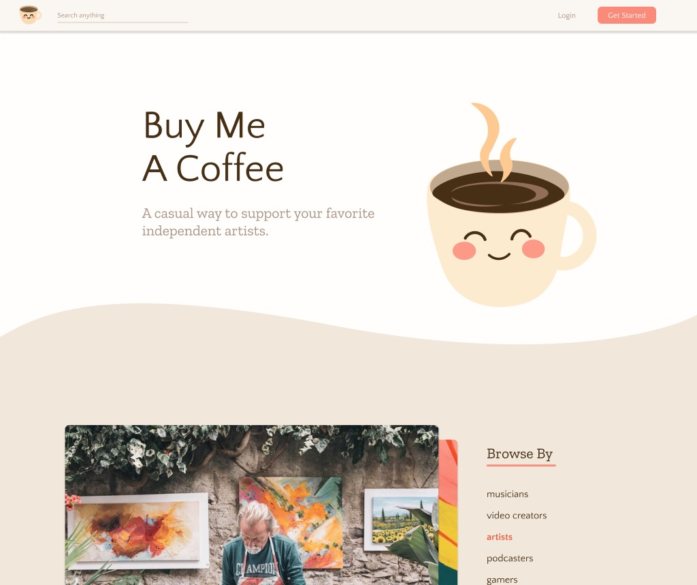

For this project, I partnered up with three other classmates to create a website for the startup Buy Me A Coffee. The goal of this project is to design a website entirely from scratch, knowing only the goal of the startup, which is to make it easy for online content creators to get paid. Through several iterations and revisions of design concepts, we ultimately developed a functional Figma prototype from scratch, without looking at the startup's existing website. We then conducted user testing through UserTesting.com, and re-evaluated our design based on the results we received.
In the generation of crowdfunding with products such as Kickstarter and Patreon, Buy Me a Coffee takes a new angle by emphasizing small donations equated to real-life items, like coffee and cookies. Creators will be able to earn passive income and grow their online presence through the website.
Below is the home page of our final design iteration.
One of the things we considered during the process of sketching was how to make the interface appealing to two different demographics: the creators themselves, and the donators. We wanted to make sure that the interface met the needs of both user groups.
We decided to go with figure 1 because the home page best represented the diverse target audiences of users (artists, podcasters, educators), while the profile page enabled the user to engage with its fans through posts and a gallery of their content, rather than focusing on monetary statistics (fig 3).
Some versions attempted to recommend personal suggestions to users, but the reality is that Buy Me A Coffee wasn’t made for a user’s entertainment—it’s a donation platform, and to bring in a larger customer base, creators have to feel incentivized that their profiles might actually be seen. Hence, we went with figure 1 because it allowed the most flexible number of diverse categories to be presented in a neutral fashion, allowing more fairness in terms of what is advertised.
As we began to turn from paper to Figma, we discussed as a group on what we wanted the tone of the website to be. In the end, we settled on colors and typography reminiscent of a cafe to evoke the casual nature of the donations, and our initial concepts are shown to the right. Another team member also made custom icons in Adobe Illustrator that aligned more with our visual language.
Select screenshots are displayed to the right, but once again, check out our Figma prototype to see more of it!
After hearing feedback from other classmates, we made some changes and adjustments to how certain pages are displayed to the user. For instance, one suggestion was to tie the donation page closer to the user profile, so contributors 1) can easily confirm they are indeed donating to the right person, and 2) invoke empathy by reminding them they are contributing to the livelihood of one of their favorite creators. And so we updated the flow of the donation process to be nested within the user profile itself.
We also submitted our prototype to UserTesting.com for feedback, where users were instructed to navigate to a person's profile, select a coffee donation, and purchase the coffee. Overall, users were able to complete these tasks quickly, though some users noted how many pages they had to navigate through in order to complete the donation process. Technical issues also persisted with two users being unable to scroll the page, though we are unsure if that is an issue with Figma itself or our prototype.
My role in this project was primarily contributing towards the design side—the initial sketches were mine, as were the foundations for the overall site wireframe we ended up using. However, this was very much a group effort, as we experimented with many different color palettes, font combinations, and layouts to evoke the welcoming atmosphere we wanted to give. We consulted each other at nearly every step of the process, tweaking elements as we went—from enlarging the user's picture on their profile page to help identify with them, to cleaning up overall design consistency.